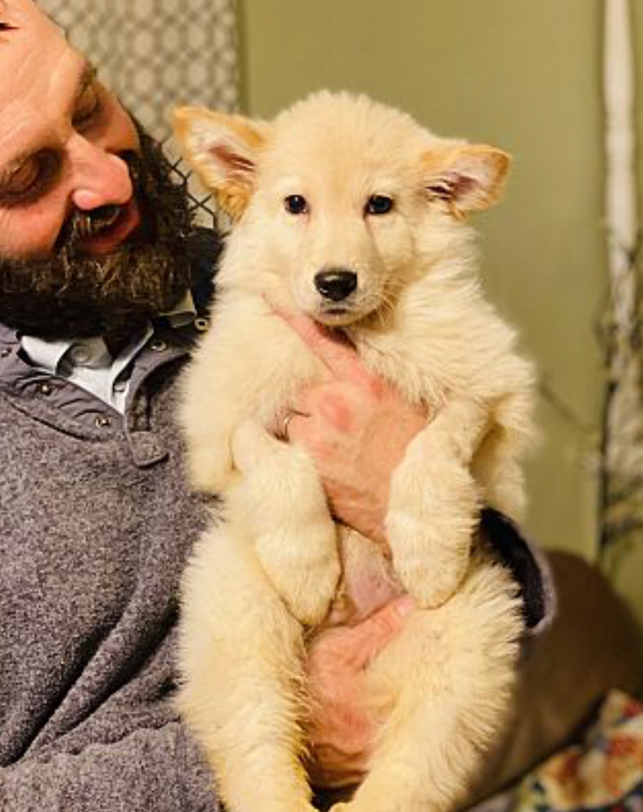
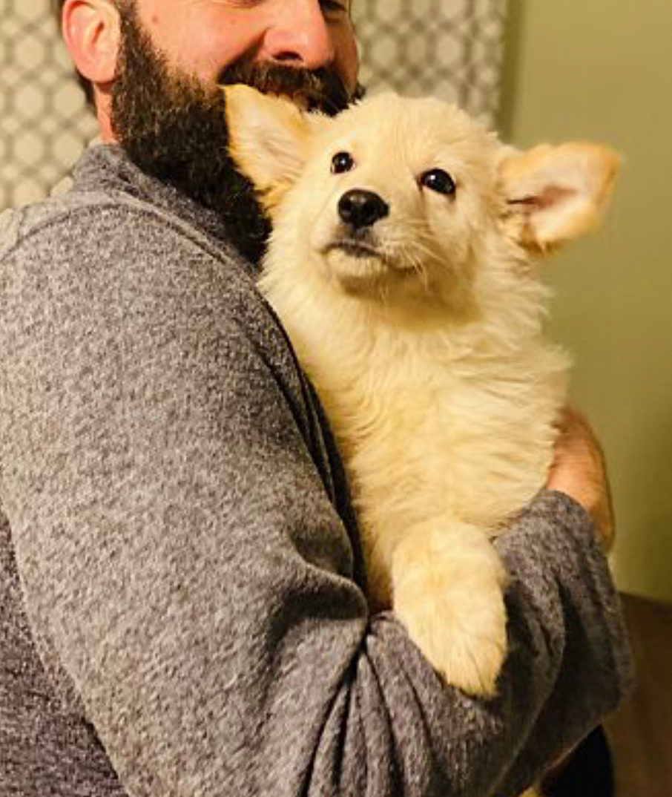
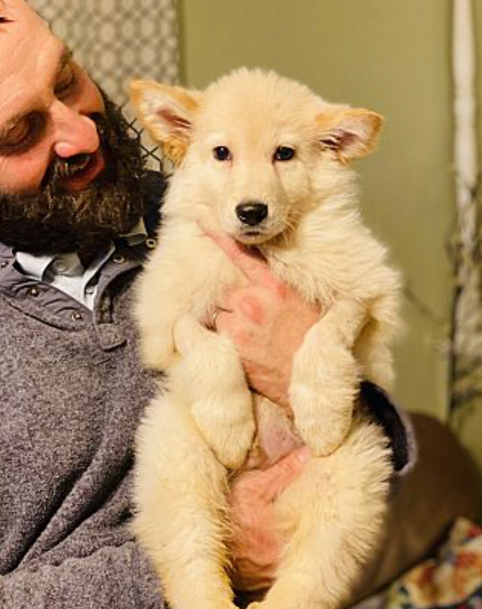
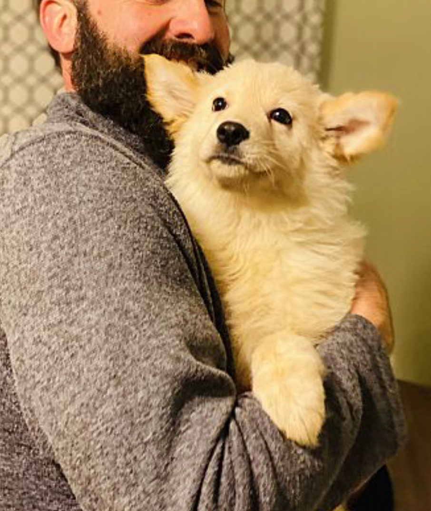

 
 

We have 7 ADORABLE 8 week old high content German Shepherd mix puppies looking for their forever home. We have one female and 6 males. They were born to a purebred GSD dog mommy. We do not know who daddy was. We have been trying to spay this mother for some time after she had had litter after litter of puppies. The owners finally allowed us to spay her after this litter if we took these babies into the rescue. They were born on October 27th. They will be ready to be transported to their new homes on the weekend of January 18th. These are happy go lucky puppies who will make excellent companions given the proper training starting now. They are typical puppies and will have to be taught manners, house training, leash training, etc. But with the right direction and commitment will be amazing dogs. We normally try to reply to applications within 72 hours, however with the holiday and our volunteers taking a few days off, we will be accepting applications on the puppies until Monday, January 6th. Upon reviewing the applications, we will be conducting phone interviews at the first of the week with families that we think could potentially be good fits. We appreciate your patience while we work through the applications on this family. Their adoption fee is $375 and their transport fee is $145. We will personally transport them to the Asheville, DC, New York, and New England areas. Please email us at brighthopeadoptions@gmail.com and you will receive a auto reply with a link to our online application. Thank you!!
The first step to adoption is to send us an email. In return, you will receive a link to our online application. Upon submission, you will be contacted for a phone interview if we feel that your home may be a good for for the dog you have applied for. This will be followed by vet and personal reference checks and a home visit. Our adoption donations are between $275-$300 and the transport fee is $145. All adopters are required to sign an adoption contract.